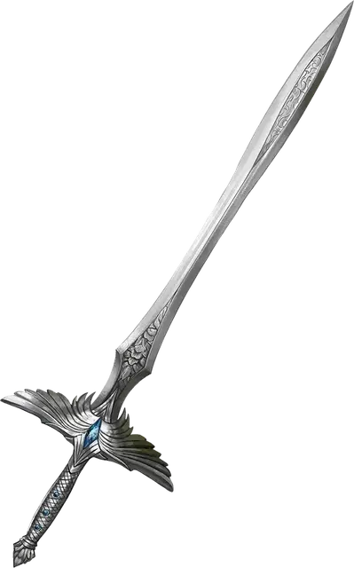

Святой мститель
Holy Avenger
Оружие (любой меч), легендарное (требуется настройка паладином)

Рекомендованная стоимость от 50 001 зм
Вы получаете бонус +3 к броскам атаки и урона, совершённым этим магическим оружием. Если вы попадаете им по исчадию или нежити, это существо получает дополнительный урон излучением 2к10.
Пока вы держите в руке этот вынутый из ножен меч, он создаёт ауру с радиусом 10 футов вокруг вас. Вы и все дружественные вам существа в этой ауре совершаете с преимуществом спасброски от заклинаний и других магических эффектов. Если у вас есть 17 уровней в классе паладина, радиус ауры увеличивается до 30 футов.